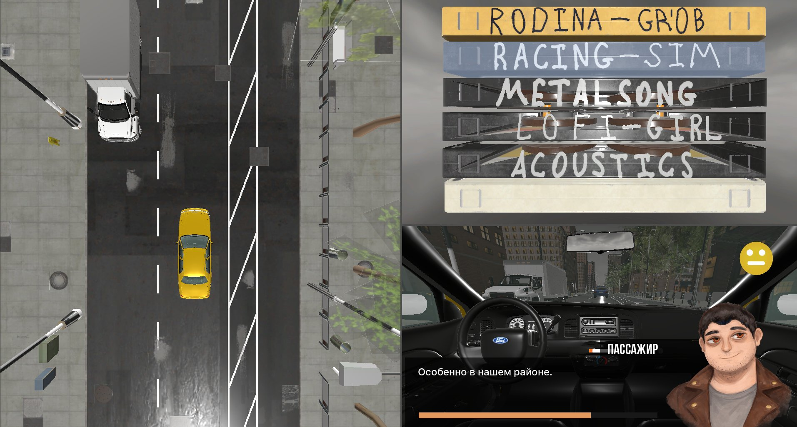
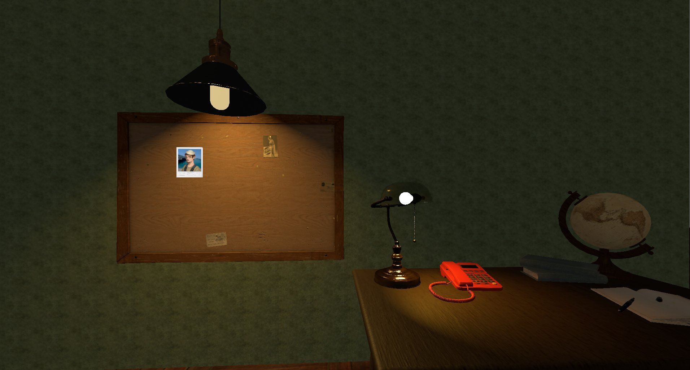
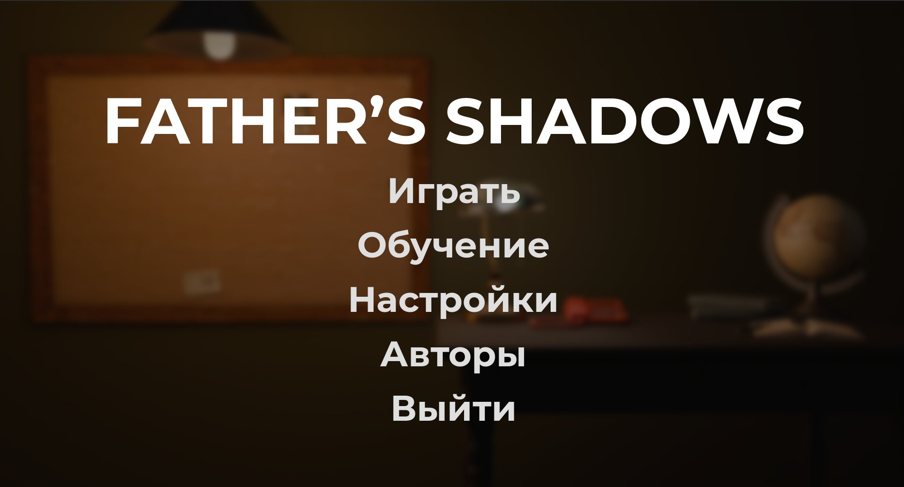
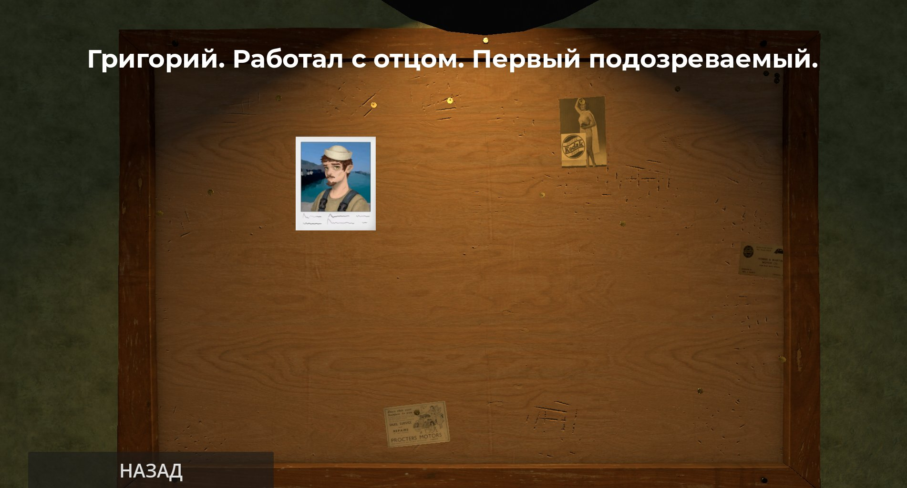
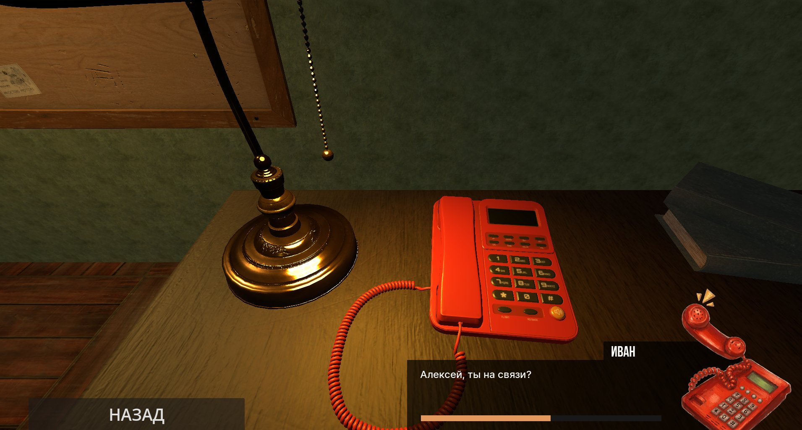

Father's Shadows — 3D-игра с элементами детектива и визуальной новеллы, созданная в рамках вариативной части учебной практики.
Игрок берёт на себя роль таксиста, расследующего обстоятельства исчезновения своего отца. Каждая поездка — это разговор: пассажиры дают подсказки, врут или говорят правду. Ключевая механика — поддержание уровня доверия во время диалога. Слушай внимательно, выбирай слова с умом.
Весь игровой мир — бесконечный городской поток. Пока машина движется вперёд, детектив в голове складывает картину: пробковая доска с фотографиями, телефонные звонки от загадочного Ивана, старые кассеты в магнитоле.
Проект стал практическим погружением в 3D-разработку: от процедурной генерации дороги до диалоговых систем и пользовательского интерфейса.




